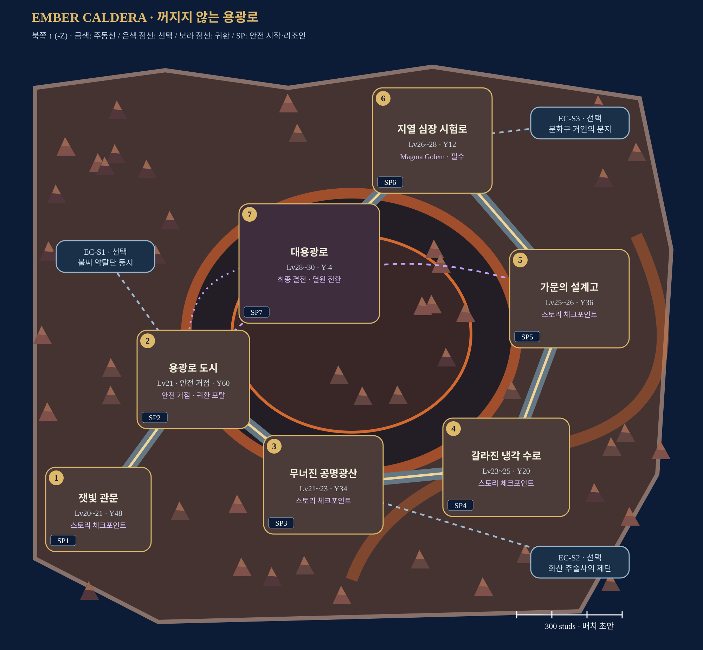

도시를 지키는 보호막을 유지하며, 광산의 희생을 멈출 대체 열원을 찾는 화산 원정.
제작 배치 초안 · 1~4인 · Lv20–30 · Roblox Studio 구현 전
각 스토리에 SP1~SP7 안전 시작 마당을 둔다. 시작·이어하기·재플레이·리조인을 지원하며, 스토리 사이는 직접 이동한다. 에픽 이동·안전 귀환은 포탈.

원본 지도 열기 · 제작 사양 · 좌표 데이터
내부 그림은 연결도이며 실제 축척/콜라이더가 아니다. 몬스터·장치의 정확한 위치는 블록아웃 후 결정한다.
현무암 절벽·깨진 분화구·주황 용암·성벽/다리·보라 포탈을 공유한다. 타워 패드와 U턴은 RPG 자유 이동 공간으로 재구성한다.
Inferno Overlord는 과열된 용광로의 공명체다. Caldera Titan은 에픽 이후 선택 도전이며 본편 결말의 필수 보스가 아니다.